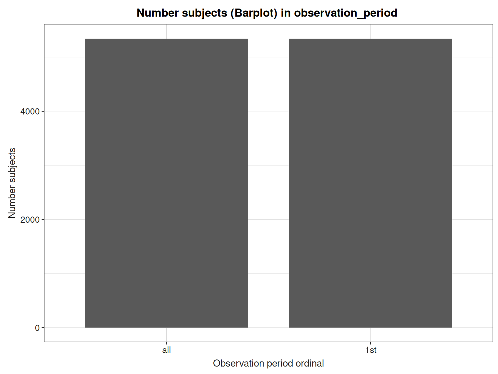
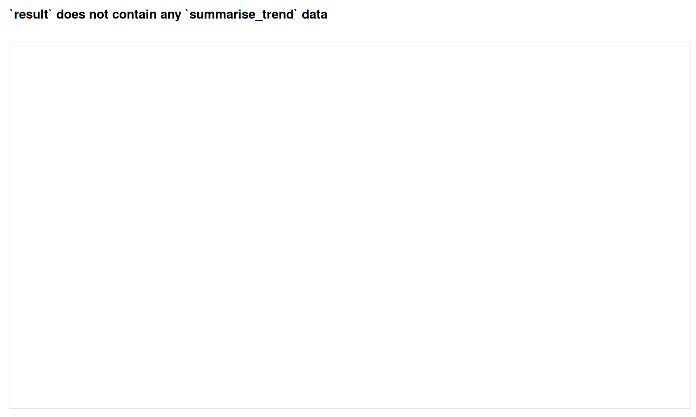
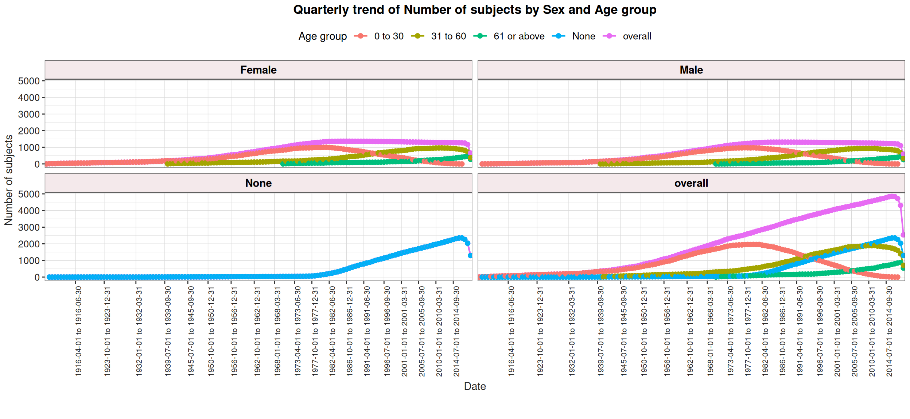
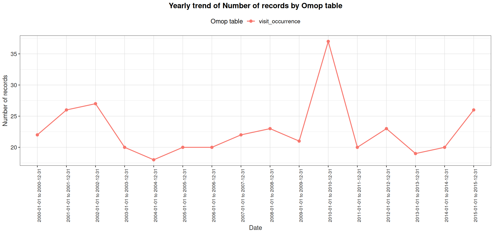
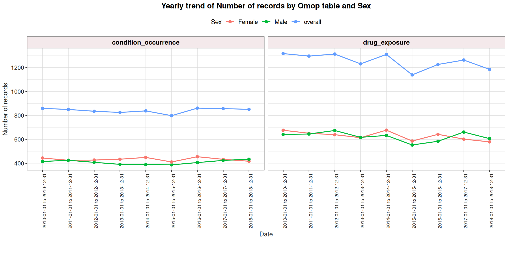

OmopSketch
Characterise databases
2026-04-30
Overview and motivation
- OmopSketch is designed to summarise key information of an OMOP-mapped database.
- It can be used to have a general characterisation of a database, or to evaluate the suitability of a database for a specific study.
- The code is publicly available in OHDSI’s GitHub repository: OmopSketch.
- Vignettes with further details and examples can be found in the package website.
- Available from CRAN.

Create the CDM object
- Load the required packages
- Create a cdm object containing syntethic data
datasetName <- "GiBleed"
dbdir <- here(paste0(datasetName, ".duckdb"))
con <- dbConnect(drv = duckdb(dbdir = dbdir))
cdm <- cdmFromCon(
con = con,
cdmSchema = "main",
writeSchema = "main",
writePrefix = "os_",
cdmName = datasetName
)1. Snapshot
General info on your database
summariseOmopSnapshot() function provides a real-time overview of the OMOP database, highlighting key characteristics at a specific moment.
Key information provided:
-
Vocabulary version: Current version from the
vocabularytable. -
Table sizes: Number of records in the
personandobservation_periodtables. -
Observation period span: The full time range covered by the
observation_periodtable. - Source type: Identifies the origin or type of the data source.
summariseOmopSnapshot()
- Create the summarised result with the snapshot information
snapshot <- summariseOmopSnapshot(cdm = cdm)
glimpse(snapshot)Rows: 16
Columns: 13
$ result_id <int> 1, 1, 1, 1, 1, 1, 1, 1, 1, 1, 1, 1, 1, 1, 1, 1
$ cdm_name <chr> "GiBleed", "GiBleed", "GiBleed", "GiBleed", "GiBleed", "GiBleed", "GiBleed", "GiBleed", "GiBl…
$ group_name <chr> "overall", "overall", "overall", "overall", "overall", "overall", "overall", "overall", "over…
$ group_level <chr> "overall", "overall", "overall", "overall", "overall", "overall", "overall", "overall", "over…
$ strata_name <chr> "overall", "overall", "overall", "overall", "overall", "overall", "overall", "overall", "over…
$ strata_level <chr> "overall", "overall", "overall", "overall", "overall", "overall", "overall", "overall", "over…
$ variable_name <chr> "general", "general", "general", "cdm", "cdm", "cdm", "cdm", "cdm", "cdm", "observation_perio…
$ variable_level <chr> NA, NA, NA, NA, NA, NA, NA, NA, NA, NA, NA, NA, NA, NA, NA, NA
$ estimate_name <chr> "snapshot_date", "person_count", "vocabulary_version", "source_name", "version", "holder_name…
$ estimate_type <chr> "date", "integer", "character", "character", "character", "character", "character", "characte…
$ estimate_value <chr> "2026-04-30", "2694", "v5.0 18-JAN-19", "Synthea synthetic health database", "5.3", "OHDSI Co…
$ additional_name <chr> "overall", "overall", "overall", "overall", "overall", "overall", "overall", "overall", "over…
$ additional_level <chr> "overall", "overall", "overall", "overall", "overall", "overall", "overall", "overall", "over…tableOmopSnapshot()
- Format the result into a gt table
tableOmopSnapshot(result = snapshot, type = "gt")| Estimate |
Database name
|
|---|---|
| GiBleed | |
| General | |
| Snapshot date | 2026-04-30 |
| Person count | 2,694 |
| Vocabulary version | v5.0 18-JAN-19 |
| Cdm | |
| Source name | Synthea synthetic health database |
| Version | 5.3 |
| Holder name | OHDSI Community |
| Release date | 2019-05-25 |
| Description | SyntheaTM is a Synthetic Patient Population Simulator. The goal is to output synthetic, realistic (but not real), patient data and associated health records in a variety of formats. |
| Documentation reference | https://synthetichealth.github.io/synthea/ |
| Observation period | |
| N | 2,694 |
| Start date | 1908-09-22 |
| End date | 2019-07-03 |
| Cdm source | |
| Type | duckdb |
| Package | CDMConnector |
| Write schema | main |
| Write prefix | os_ |
2. Observation Period
Summarise the content of your observation period table
summariseObservationPeriod() function generates essential statistics derived from the observation_period table.
Key Information Provided:
- Number of records per person: Counts of observation periods associated with each individual.
- Duration in days: Length of each observation period, measured in days.
- Days to next observation period: Time elapsed in days between a patient’s consecutive observation periods.
summariseObservationPeriod()
- Create the summarised result
result <- summariseObservationPeriod(observationPeriod = cdm$observation_period, sex = TRUE)
glimpse(result)Rows: 12,486
Columns: 13
$ result_id <int> 1, 1, 1, 1, 1, 1, 1, 1, 1, 1, 1, 1, 1, 1, 1, 1, 1, 1, 1, 1, 1, 1, 1, 1, 1, 1, 1, 1, 1, 1, 1, …
$ cdm_name <chr> "GiBleed", "GiBleed", "GiBleed", "GiBleed", "GiBleed", "GiBleed", "GiBleed", "GiBleed", "GiBl…
$ group_name <chr> "observation_period_ordinal", "observation_period_ordinal", "observation_period_ordinal", "ob…
$ group_level <chr> "all", "all", "all", "all", "all", "all", "all", "all", "all", "all", "all", "all", "all", "a…
$ strata_name <chr> "overall", "overall", "overall", "overall", "overall", "overall", "overall", "overall", "over…
$ strata_level <chr> "overall", "overall", "overall", "overall", "overall", "overall", "overall", "overall", "over…
$ variable_name <chr> "Records per person", "Records per person", "Records per person", "Records per person", "Reco…
$ variable_level <chr> NA, NA, NA, NA, NA, NA, NA, NA, NA, NA, NA, NA, NA, NA, NA, NA, NA, NA, NA, NA, NA, NA, NA, N…
$ estimate_name <chr> "mean", "sd", "min", "q05", "q25", "median", "q75", "q95", "max", "mean", "sd", "min", "q05",…
$ estimate_type <chr> "numeric", "numeric", "integer", "integer", "integer", "integer", "integer", "integer", "inte…
$ estimate_value <chr> "1", "0", "1", "1", "1", "1", "1", "1", "1", "14402.0014972862", "8725.3408283113", "1", "143…
$ additional_name <chr> "overall", "overall", "overall", "overall", "overall", "overall", "overall", "overall", "over…
$ additional_level <chr> "overall", "overall", "overall", "overall", "overall", "overall", "overall", "overall", "over…tableObservationPeriod()
- Format the results into a gt table
tableObservationPeriod(result = result, type = "gt")| Observation period ordinal | Variable name | Variable level | Estimate name |
CDM name
|
|---|---|---|---|---|
| GiBleed | ||||
| overall | ||||
| all | Number records | – | N | 5,343 |
| Number subjects | – | N | 5,343 | |
| Subjects not in person table | – | N (%) | 2,649 (49.58%) | |
| Records per person | – | Mean (SD) | 1.00 (0.00) | |
| Median [Q25 - Q75] | 1 [1 - 1] | |||
| Range [min to max] | [1 to 1] | |||
| Duration in days | – | Mean (SD) | 14,402.00 (8,725.34) | |
| Median [Q25 - Q75] | 13,868.00 [7,102.50 - 20,955.50] | |||
| Range [min to max] | [1.00 to 40,349.00] | |||
| Type concept id | Period covering healthcare encounters | N (%) | 5,343 (100.00%) | |
| Start date before birth date | – | N (%) | 0 (0.00%) | |
| End date before start date | – | N (%) | 0 (0.00%) | |
| Column name | Observation period end date | N missing data (%) | 0 (0.00%) | |
| Observation period id | N missing data (%) | 0 (0.00%) | ||
| N zeros (%) | 0 (0.00%) | |||
| Observation period start date | N missing data (%) | 0 (0.00%) | ||
| Period type concept id | N missing data (%) | 0 (0.00%) | ||
| N zeros (%) | 0 (0.00%) | |||
| Person id | N missing data (%) | 0 (0.00%) | ||
| N zeros (%) | 0 (0.00%) | |||
| 1st | Number subjects | – | N | 5,343 |
| Duration in days | – | Mean (SD) | 14,402.00 (8,725.34) | |
| Median [Q25 - Q75] | 13,868.00 [7,102.50 - 20,955.50] | |||
| Range [min to max] | [1.00 to 40,349.00] | |||
| Female | ||||
| all | Number records | – | N | 1,373 |
| Number subjects | – | N | 1,373 | |
| Records per person | – | Mean (SD) | 1.00 (0.00) | |
| Median [Q25 - Q75] | 1 [1 - 1] | |||
| Range [min to max] | [1 to 1] | |||
| Duration in days | – | Mean (SD) | 21,666.77 (5,623.53) | |
| Median [Q25 - Q75] | 20,861.00 [17,382.00 - 24,683.00] | |||
| Range [min to max] | [11,397.00 to 40,349.00] | |||
| Type concept id | Period covering healthcare encounters | N (%) | 1,373 (100.00%) | |
| Column name | Observation period end date | N missing data (%) | 0 (0.00%) | |
| Observation period id | N missing data (%) | 0 (0.00%) | ||
| N zeros (%) | 0 (0.00%) | |||
| Observation period start date | N missing data (%) | 0 (0.00%) | ||
| Period type concept id | N missing data (%) | 0 (0.00%) | ||
| N zeros (%) | 0 (0.00%) | |||
| Person id | N missing data (%) | 0 (0.00%) | ||
| N zeros (%) | 0 (0.00%) | |||
| 1st | Number subjects | – | N | 1,373 |
| Duration in days | – | Mean (SD) | 21,666.77 (5,623.53) | |
| Median [Q25 - Q75] | 20,861.00 [17,382.00 - 24,683.00] | |||
| Range [min to max] | [11,397.00 to 40,349.00] | |||
| Male | ||||
| all | Number records | – | N | 1,321 |
| Number subjects | – | N | 1,321 | |
| Records per person | – | Mean (SD) | 1.00 (0.00) | |
| Median [Q25 - Q75] | 1 [1 - 1] | |||
| Range [min to max] | [1 to 1] | |||
| Duration in days | – | Mean (SD) | 21,535.91 (5,287.44) | |
| Median [Q25 - Q75] | 20,973.00 [17,557.00 - 24,704.00] | |||
| Range [min to max] | [11,439.00 to 40,006.00] | |||
| Type concept id | Period covering healthcare encounters | N (%) | 1,321 (100.00%) | |
| Column name | Observation period end date | N missing data (%) | 0 (0.00%) | |
| Observation period id | N missing data (%) | 0 (0.00%) | ||
| N zeros (%) | 0 (0.00%) | |||
| Observation period start date | N missing data (%) | 0 (0.00%) | ||
| Period type concept id | N missing data (%) | 0 (0.00%) | ||
| N zeros (%) | 0 (0.00%) | |||
| Person id | N missing data (%) | 0 (0.00%) | ||
| N zeros (%) | 0 (0.00%) | |||
| 1st | Number subjects | – | N | 1,321 |
| Duration in days | – | Mean (SD) | 21,535.91 (5,287.44) | |
| Median [Q25 - Q75] | 20,973.00 [17,557.00 - 24,704.00] | |||
| Range [min to max] | [11,439.00 to 40,006.00] | |||
| None | ||||
| all | Number records | – | N | 2,649 |
| Number subjects | – | N | 2,649 | |
| Records per person | – | Mean (SD) | 1.00 (0.00) | |
| Median [Q25 - Q75] | 1 [1 - 1] | |||
| Range [min to max] | [1 to 1] | |||
| Duration in days | – | Mean (SD) | 7,079.08 (4,106.70) | |
| Median [Q25 - Q75] | 7,064.00 [3,599.00 - 10,487.00] | |||
| Range [min to max] | [1.00 to 16,478.00] | |||
| Type concept id | Period covering healthcare encounters | N (%) | 2,649 (100.00%) | |
| Column name | Observation period end date | N missing data (%) | 0 (0.00%) | |
| Observation period id | N missing data (%) | 0 (0.00%) | ||
| N zeros (%) | 0 (0.00%) | |||
| Observation period start date | N missing data (%) | 0 (0.00%) | ||
| Period type concept id | N missing data (%) | 0 (0.00%) | ||
| N zeros (%) | 0 (0.00%) | |||
| Person id | N missing data (%) | 0 (0.00%) | ||
| N zeros (%) | 0 (0.00%) | |||
| 1st | Number subjects | – | N | 2,649 |
| Duration in days | – | Mean (SD) | 7,079.08 (4,106.70) | |
| Median [Q25 - Q75] | 7,064.00 [3,599.00 - 10,487.00] | |||
| Range [min to max] | [1.00 to 16,478.00] | |||
plotObservationPeriod()
- Plot the results - Number of subjects
plotObservationPeriod(result = result,
plotType = "barplot",
variableName = "Number subjects",
colour = "sex")
plotObservationPeriod()
- Plot the results - Duration in days
plotObservationPeriod(result = result,
plotType = "densityplot",
variableName = "Duration in days",
colour = "sex",
facet = "observation_period_ordinal")
Trends in observation period table
summariseInObservation() function summarises trends derived from the observation_period table.
Key Information Provided:
- Number of records: Count of entries.
- Number of subjects: Count of distinct individuals (patients) represented in the table.
- Number of person-days: The cumulative sum of days individuals are observed.
- Number of females: Count of female subjects in observation.
- Median age: The median age of the subjects at the beginning of the observation period.
summariseInObservation()
- Choose the interval between years, quarters and months (default is overall)
- Select the output of interest between record, person, person-days, sex and age (default is record)
- Create the summarised result.
result <- summariseInObservation(observationPeriod = cdm$observation_period,
interval = "years",
output = c("record","person", "person-days", "sex", "age"),
ageGroup = list(c(0,50), c(51, Inf))) plotInObservation()
- Plot the results - Number of person-days.
result |>
filter(variable_name == "Number person-days") |>
plotInObservation(colour = "age_group")
plotInObservation()
- Plot the results - Median age in observation.
result |>
filter(variable_name == "Median age in observation") |>
plotInObservation(facet = "age_group")
Your turn: Visualising Observation Trends
Create a plot showing the quarterly trend of the number of people in observation, stratified by sex and age group (0-30, 31-60, 61+).

Your turn: Visualising Observation Trends
Create the summarised result using
summariseInObservation():Create the plot using
plotInObservation(), with:
-
facet = "sex"→ Separate panels by sex -
colour = "age_group"→ Different colors for age groups (0-30,31-60,61+)
💡 Click to see solution
result <- summariseInObservation(observationPeriod = cdm$observation_period,
output = "person",
interval = "quarters",
sex = TRUE,
ageGroup = list(c(0,30), c(31,60), c(61, Inf)))
plotInObservation(result = result, facet = "sex", colour = "age_group")3. Clinical tables characterisation
Check missingness
summariseMissingData() function summarises missingness in a OMOP table
Key Information Provided:
- Number of missing data: For each column of the table it counts the number of missing values.
- Number of zeros: For each columns containing concept id it counts the number of entries equal to 0.
summariseMissingData()
- Choose the tables to analyse
- Specify the columns to assess for missing values (by default all columns are included)
- Optionally run the analysis on a sample of each table (default is 1 million rows)
- Create the summarised result.
result <- summariseMissingData(cdm = cdm,
omopTableName = "drug_exposure",
col = NULL,
sample = 1000) tableMissingData()
- Visualise the result into a gt table
tableMissingData(result = result, type = "gt")| Column name | Estimate name |
Database name
|
|---|---|---|
| GiBleed | ||
| drug_exposure | ||
| days_supply | N missing data (%) | 0 (0.00%) |
| dose_unit_source_value | N missing data (%) | 25,139 (100.00%) |
| drug_concept_id | N missing data (%) | 0 (0.00%) |
| N zeros (%) | 0 (0.00%) | |
| drug_exposure_end_date | N missing data (%) | 0 (0.00%) |
| drug_exposure_end_datetime | N missing data (%) | 0 (0.00%) |
| drug_exposure_id | N missing data (%) | 0 (0.00%) |
| N zeros (%) | 0 (0.00%) | |
| drug_exposure_start_date | N missing data (%) | 0 (0.00%) |
| drug_exposure_start_datetime | N missing data (%) | 0 (0.00%) |
| drug_source_concept_id | N missing data (%) | 0 (0.00%) |
| N zeros (%) | 0 (0.00%) | |
| drug_source_value | N missing data (%) | 0 (0.00%) |
| drug_type_concept_id | N missing data (%) | 0 (0.00%) |
| N zeros (%) | 0 (0.00%) | |
| lot_number | N missing data (%) | 0 (0.00%) |
| person_id | N missing data (%) | 0 (0.00%) |
| N zeros (%) | 0 (0.00%) | |
| provider_id | N missing data (%) | 0 (0.00%) |
| N zeros (%) | 25,139 (100.00%) | |
| quantity | N missing data (%) | 0 (0.00%) |
| refills | N missing data (%) | 0 (0.00%) |
| route_concept_id | N missing data (%) | 0 (0.00%) |
| N zeros (%) | 25,139 (100.00%) | |
| route_source_value | N missing data (%) | 25,139 (100.00%) |
| sig | N missing data (%) | 25,139 (100.00%) |
| stop_reason | N missing data (%) | 25,139 (100.00%) |
| verbatim_end_date | N missing data (%) | 2,198 (8.74%) |
| visit_detail_id | N missing data (%) | 0 (0.00%) |
| N zeros (%) | 25,139 (100.00%) | |
| visit_occurrence_id | N missing data (%) | 216 (0.86%) |
| N zeros (%) | 0 (0.00%) | |
Content of the clinical tables
summariseClinicalRecords() function provides a comprehensive overview of the content of a clinical table.
Key Information Provided:
- Number of records: Number of entries in the table
- Number of subjects: Number of distinct subjects represented in the table
- Record per person: Summary statistics on the number of records per person
- Records in observation: Number and percentage of records within the observation period
- Domains: Domains associated with the concepts
- Concept type:: Type and source of the records (e.g., EHR, claims)
- Source vocabulary: Vocabulary used for mapping the concepts
- Whether the concepts are standard: Number and percentage of records mapped to standard concept IDs
summariseClinicalRecords()
- Choose the tables to analyse
- Choose the statistics to compute for records per person (by default mean, standard deviation, median, q25, q75, min and max)
- Specify which analysis to include (by default, all are included)
- Create the summarised result.
result <- summariseClinicalRecords(cdm = cdm,
omopTableName = "condition_occurrence",
recordsPerPerson = c("mean", "sd", "median", "q25", "q75", "min", "max"),
inObservation = TRUE,
standardConcept = TRUE,
sourceVocabulary = TRUE,
domainId = TRUE,
typeConcept = TRUE) tableClinicalRecords()
- Visualise the result into a gt table
tableClinicalRecords(result = result, type = "gt")| Variable name | Variable level | Estimate name |
Database name
|
|---|---|---|---|
| GiBleed | |||
| condition_occurrence | |||
| Number records | – | N | 65,332 |
| Number subjects | – | N (%) | 2,694 (100.00%) |
| Subjects not in person table | – | N (%) | 0 (0.00%) |
| Records per person | – | Mean (SD) | 24.25 (7.41) |
| Median [Q25 - Q75] | 23 [19 - 29] | ||
| Range [min to max] | [5 to 65] | ||
| In observation | No | N (%) | 450 (0.69%) |
| Yes | N (%) | 64,882 (99.31%) | |
| Domain | Condition | N (%) | 65,332 (100.00%) |
| Source vocabulary | Icd10cm | N (%) | 479 (0.73%) |
| No matching concept | N (%) | 27 (0.04%) | |
| Snomed | N (%) | 64,826 (99.23%) | |
| Standard concept | Standard | N (%) | 65,332 (100.00%) |
| Type concept id | Ehr encounter diagnosis | N (%) | 65,332 (100.00%) |
| Start date before birth date | – | N (%) | 0 (0.00%) |
| End date before start date | – | N (%) | 0 (0.00%) |
| Column name | Condition concept id | N missing data (%) | 0 (0.00%) |
| N zeros (%) | 0 (0.00%) | ||
| Condition end date | N missing data (%) | 8,652 (13.24%) | |
| Condition end datetime | N missing data (%) | 8,652 (13.24%) | |
| Condition occurrence id | N missing data (%) | 0 (0.00%) | |
| N zeros (%) | 0 (0.00%) | ||
| Condition source concept id | N missing data (%) | 0 (0.00%) | |
| N zeros (%) | 0 (0.00%) | ||
| Condition source value | N missing data (%) | 0 (0.00%) | |
| Condition start date | N missing data (%) | 0 (0.00%) | |
| Condition start datetime | N missing data (%) | 0 (0.00%) | |
| Condition status concept id | N missing data (%) | 0 (0.00%) | |
| N zeros (%) | 65,332 (100.00%) | ||
| Condition status source value | N missing data (%) | 65,332 (100.00%) | |
| Condition type concept id | N missing data (%) | 0 (0.00%) | |
| N zeros (%) | 0 (0.00%) | ||
| Person id | N missing data (%) | 0 (0.00%) | |
| N zeros (%) | 0 (0.00%) | ||
| Provider id | N missing data (%) | 65,332 (100.00%) | |
| N zeros (%) | 0 (0.00%) | ||
| Stop reason | N missing data (%) | 65,332 (100.00%) | |
| Visit detail id | N missing data (%) | 0 (0.00%) | |
| N zeros (%) | 65,332 (100.00%) | ||
| Visit occurrence id | N missing data (%) | 64 (0.10%) | |
| N zeros (%) | 0 (0.00%) | ||
Trends in the clinical tables
summariseRecordCount() function summarises the record trend over specified time intervals. Only records that fall within the observation period are considered.
- Choose the tables to analyse
- Choose the interval between years, quarters and months (default is overall)
- Create the summarised result.
result <- summariseRecordCount(cdm = cdm,
omopTableName = "visit_occurrence",
interval = "years",
dateRange = as.Date(c("2000-01-01", "2015-12-31")))plotRecordCount()
- Visualise the result into a plot
plotRecordCount(result = result, colour = "omop_table")
Your turn: Visualising record trends
Create a plot showing the yearly trend in the number of drug and condition records, stratified by sex and in the date range 2010-2018.

Your turn: Visualising record trend
Create the summarised result using
summariseRecordCount():Create the plot using
plotRecordCount(), with:
-
facet = "omop_table"→ Separate panels by table -
colour = "sex"→ Different colors for males and females
💡 Click to see solution
result <- summariseRecordCount(cdm = cdm,
omopTableName = c("drug_exposure", "condition_occurrence"),
interval = "years",
sex = TRUE,
dateRange = as.Date(c("2010-01-01", "2018-12-31")))
plotRecordCount(result = result, facet = "omop_table", colour = "sex")4. Concept Counts
Concept counts
summariseConceptIdCounts() provides the counts for each concept id available in the table
Key Information Provided:
- Number of records: Number of entries for each concept ID
- Number of subjects: Number of distinct individuals associated with each concept ID
summariseConceptIdCounts()
- Choose the tables to analyse
- Specify the counting method (e.g.,
countBy = "record"by default, or “person” to count distinct subjects)
result <- summariseConceptIdCounts(cdm = cdm,
omopTableName = "procedure_occurrence",
countBy = c("record", "person"))
glimpse(result)Rows: 102
Columns: 13
$ result_id <int> 1, 1, 1, 1, 1, 1, 1, 1, 1, 1, 1, 1, 1, 1, 1, 1, 1, 1, 1, 1, 1, 1, 1, 1, 1, 1, 1, 1, 1, 1, 1, …
$ cdm_name <chr> "GiBleed", "GiBleed", "GiBleed", "GiBleed", "GiBleed", "GiBleed", "GiBleed", "GiBleed", "GiBl…
$ group_name <chr> "omop_table", "omop_table", "omop_table", "omop_table", "omop_table", "omop_table", "omop_tab…
$ group_level <chr> "procedure_occurrence", "procedure_occurrence", "procedure_occurrence", "procedure_occurrence…
$ strata_name <chr> "overall", "overall", "overall", "overall", "overall", "overall", "overall", "overall", "over…
$ strata_level <chr> "overall", "overall", "overall", "overall", "overall", "overall", "overall", "overall", "over…
$ variable_name <chr> "Surgical manipulation of joint of knee", "Surgical manipulation of joint of knee", "Review o…
$ variable_level <chr> "44783196", "44783196", "4187458", "4187458", "4062501", "4062501", "4330583", "4330583", "43…
$ estimate_name <chr> "count_records", "count_subjects", "count_records", "count_subjects", "count_records", "count…
$ estimate_type <chr> "integer", "integer", "integer", "integer", "integer", "integer", "integer", "integer", "inte…
$ estimate_value <chr> "269", "254", "102", "102", "101", "101", "61", "61", "102", "102", "133", "79", "438", "236"…
$ additional_name <chr> "source_concept_id &&& source_concept_name", "source_concept_id &&& source_concept_name", "so…
$ additional_level <chr> "44783196 &&& Surgical manipulation of joint of knee", "44783196 &&& Surgical manipulation of…tableConceptIdCounts()
- Visualise the result in a interactive reactable table
- Filter the output using the
displayoption:-
display = "standard": Show only standard concepts -
display = "source": Show only source codes -
display = "missing standard": Show source codes without a mapped standard concept -
display = "missing source“: Show standard concepts without a mapped source code -
display = "overall" (default): Show all records
-
tableConceptIdCounts()
tableConceptIdCounts(result = result, display = "standard",type = "reactable")tableTopConceptCounts()
- Visualise the most frequent concepts in a gt table
- Specify the counting method (if only one counting is present in the result, it will account for that by default)
- Choose how many concepts to display (by default
top = 10)
tableTopConceptCounts()
tableTopConceptCounts(result = result, countBy = "record", top = 10, type = "gt")| Top |
Cdm name
|
|---|---|
| GiBleed | |
| procedure_occurrence | |
| 1 | Standard: Subcutaneous immunotherapy (4107731) Source: Subcutaneous immunotherapy (4107731) 17520 |
| 2 | Standard: Cognitive and behavioral therapy (4043071) Source: Cognitive and behavioral therapy (4043071) 2820 |
| 3 | Standard: Suture open wound (4125906) Source: Suture open wound (4125906) 2487 |
| 4 | Standard: Bone immobilization (4170947) Source: Bone immobilization (4170947) 1789 |
| 5 | Standard: Sputum examination (4151422) Source: Sputum examination (4151422) 1659 |
| 6 | Standard: Direct current cardioversion (4078793) Source: Direct current cardioversion (4078793) 1342 |
| 7 | Standard: Intramuscular injection (4295880) Source: Intramuscular injection (4295880) 908 |
| 8 | Standard: Pulmonary rehabilitation (4035793) Source: Pulmonary rehabilitation (4035793) 908 |
| 9 | Standard: Allergy screening test (4191853) Source: Allergy screening test (4191853) 704 |
| 10 | Standard: Bone density scan (4195803) Source: Bone density scan (4195803) 655 |
Your Turn: Top concepts
Identify the top 5 concepts in the drug_exposure table based on the number of subjects
| Top |
Cdm name
|
|---|---|
| GiBleed | |
| drug_exposure | |
| 1 | Standard: tetanus and diphtheria toxoids, adsorbed, preservative free, for adult use (40213227) Source: tetanus and diphtheria toxoids, adsorbed, preservative free, for adult use (40213227) 2660 |
| 2 | Standard: Acetaminophen 325 MG Oral Tablet (1127433) Source: Acetaminophen 325 MG Oral Tablet (1127433) 2580 |
| 3 | Standard: poliovirus vaccine, inactivated (40213160) Source: poliovirus vaccine, inactivated (40213160) 2140 |
| 4 | Standard: Amoxicillin 250 MG / Clavulanate 125 MG Oral Tablet (1713671) Source: Amoxicillin 250 MG / Clavulanate 125 MG Oral Tablet (1713671) 2021 |
| 5 | Standard: Aspirin 81 MG Oral Tablet (19059056) Source: Aspirin 81 MG Oral Tablet (19059056) 1927 |
Your turn: Top concepts
Create the summarised result using
summariseConceptIdCount()Display the 5 most frequent concept in using
tableTopConceptCounts(), with:
-
top = 5→ Show the 5 most frequent
💡 Click to see solution
result <- summariseConceptIdCounts(cdm = cdm, omopTableName = "drug_exposure", countBy = "person")
tableTopConceptCounts(result = result, top = 5)5. Database Characterisation
Get a full characterisation of you database
databaseCharacteristics() function brings together all the key summaries in one place. It includes:
Snapshot of the database
Characterisation of the observation period
Quality checks on the tables
Overview of clinical table content
databaseCharacteristics()
Select the tables to analyse
Choose whether to stratify by sex and age groups
Define the time interval for temporal summaries
Set the date range to focus the analysis
Optionally include concept ID counts (
conceptIdCounts = FALSEby default)
Visualise the characterisation results
shinyCharacteristics() creates a Shiny app to explore the results of the database characterisation.
Specify the directory where the app should be created
Optionally customise the title, logo, and visual theme
shinyCharacteristics(result = result, directory = here())